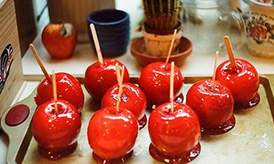

首页
效果营销
信息流广告优化
SEM优化
SEO优化
互动营销
微信营销
微博营销
技术服务
网站定制开发
移动App开发
XXX视角
关于XXX
全部
咨询
产品
设计
营销
技术
要玩转生鲜O2O 你必须了解当下七大生鲜主流模式
去年，人们还在争论生鲜O2O是不是伪命题，如今生鲜O2O已经遍地开花，传统的B2C垂直生鲜电商 纷纷借O2O完善服务和拓展市场，新入局的也借O2O快速杀入生鲜电商的蓝海市场。 生鲜电商O2O的 模式因为终端多样性、供应链的复杂性可以有多种模式(如下图所示)。在整个O2O的商业模式中：前端是客 户在线下单，端口可以是电脑、手机或者移动智能设备，

产品
|
曾好
2018-2-3
要玩转生鲜O2O 你必须了解当下七大生鲜主流模式
去年，人们还在争论生鲜O2O是不是伪命题，如今生鲜O2O已经遍地开花，传统的B2C垂直生鲜电商 纷纷借O2O完善服务和拓展市场，新入局的也借O2O快速杀入生鲜电商的蓝海市场。 生鲜电商O2O的 模式因为终端多样性、供应链的复杂性可以有多种模式(如下图所示)。在整个O2O的商业模式中：前端是客 户在线下单，端口可以是电脑、手机或者移动智能设备，
产品
|
曾好
2018-2-3
要玩转生鲜O2O 你必须了解当下七大生鲜主流模式
去年，人们还在争论生鲜O2O是不是伪命题，如今生鲜O2O已经遍地开花，传统的B2C垂直生鲜电商 纷纷借O2O完善服务和拓展市场，新入局的也借O2O快速杀入生鲜电商的蓝海市场。 生鲜电商O2O的 模式因为终端多样性、供应链的复杂性可以有多种模式(如下图所示)。在整个O2O的商业模式中：前端是客 户在线下单，端口可以是电脑、手机或者移动智能设备，
产品
|
曾好
2018-2-3
要玩转生鲜O2O 你必须了解当下七大生鲜主流模式
去年，人们还在争论生鲜O2O是不是伪命题，如今生鲜O2O已经遍地开花，传统的B2C垂直生鲜电商 纷纷借O2O完善服务和拓展市场，新入局的也借O2O快速杀入生鲜电商的蓝海市场。 生鲜电商O2O的 模式因为终端多样性、供应链的复杂性可以有多种模式(如下图所示)。在整个O2O的商业模式中：前端是客 户在线下单，端口可以是电脑、手机或者移动智能设备，
产品
|
曾好
2018-2-3
上一页
1
2
3
4
5
……
20
下一页
XXX
XXX
在线咨询